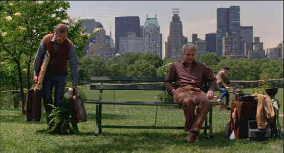

| Lonely Guy, The/B-,B |
| Universal/1984/91/WS 1.85 |
Larry Hubbard is the perfect sweet hapless character that Steve Martin can bring to life. Though the comic material stretches thin by the end of The Lonely Guy, it’s an enjoyable comedy that finds humor in some unexpected places and even gets somewhat avant-garde in its treatment of suicide.
 |
| Lonely guys congregate in the park. ©Universal |
Larry Hubbard's story wants to connect to of all those lonely guys in
a city with eight million people like New York, strangers in a street of
frenzied urbanites scurrying about their own business. Like many so many
city relationships, Larry shares rooms with his girl friend, but the lease
is in her name. When she takes on a new lover, Larry finds himself on
a parked on a Central Park bench where he meets the lugubrious Warren,.
another lonely soul dealing with his painful share of rejection. Warren is
the original lonely guy and he’s more than happy to share his vast
experience with Larry presenting him with a montage lonely guy survival
measures. The Lonely Guy makes a great change in direction when Larry
is fired from his job as a hack greeting card writer and writes the ultimate
lonely guy guide, an instant best seller. You can see the possibilities.
Steve Martin's lonely guy is joined by the doleful
Charles Grodin as Warren. They make an excellent team, extracting the last
drop from every teabag dipped into the pot of lonely guy gags. Arthur
Hiller's direction is workmanlike. A Jerry Goldsmith score always adds some
luster and New York is a perfect setting for lonely guy lore.
Transferred in a clean if unexceptional DVD, The Lonely
Guy is easy to watch. An early Universal DVD release, this one's not
anamorphic 16 x 9 enhanced. Perhaps it could have had some more contrast
pizzazz and the image resolution is shy of perfection, but the colors are
strong and the elements clean and stable. Dolby Digital mono 2 channel sound
is adequate.


Quite simply one of the funniest comedies ever made and the transfer is
gorgeous.

The Movie Poster Archive includes extensive poster images from the films of stars like Susan Hayward, Kirk Douglas, Katharine Hepburn and many more. Our featured star is James Mason


The name tells all.

Information on film sound in theaters and home theaters. Lots of helpful
information provided in a handsome interface.

A self-proclaimed bastion of irreverence place where Joe Public
smacks the heck out of the studio execs that treat us like cattle.